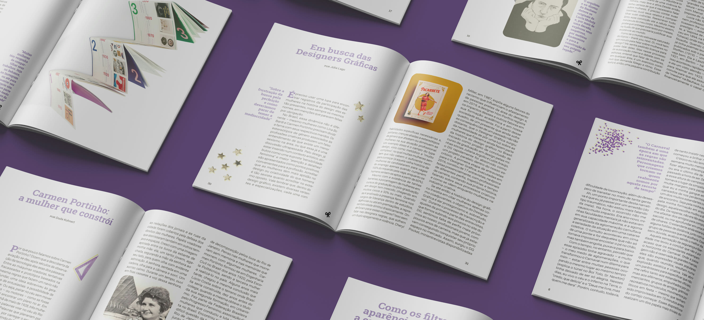
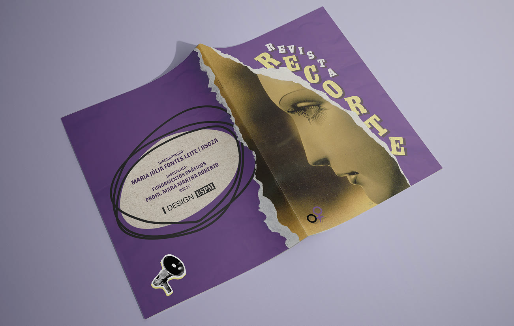
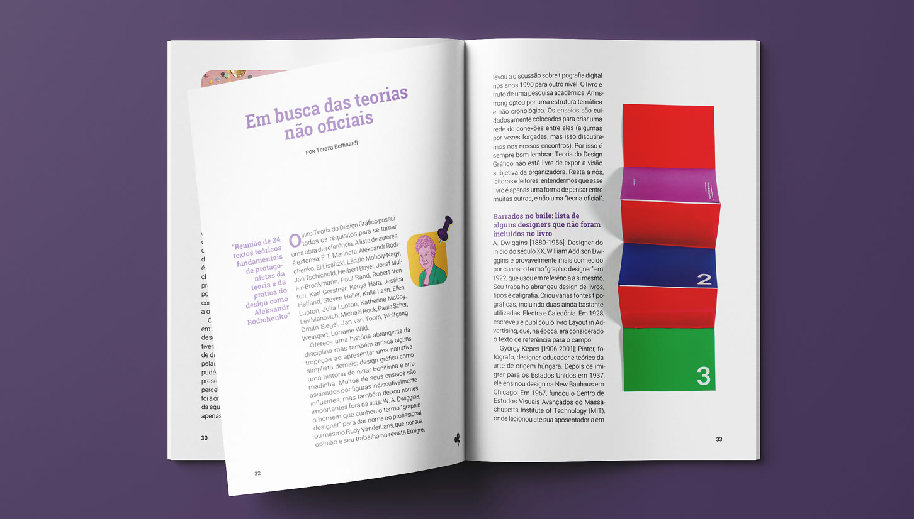
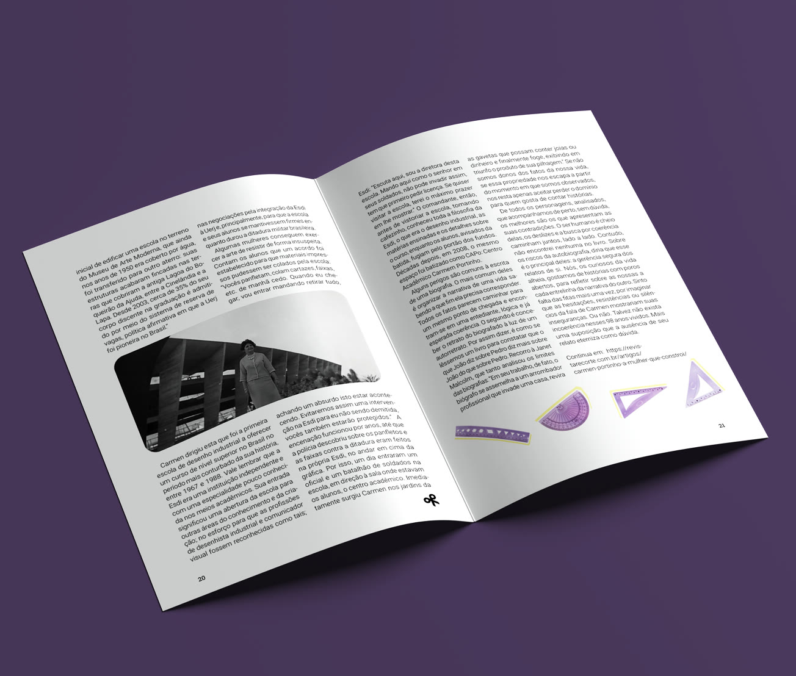
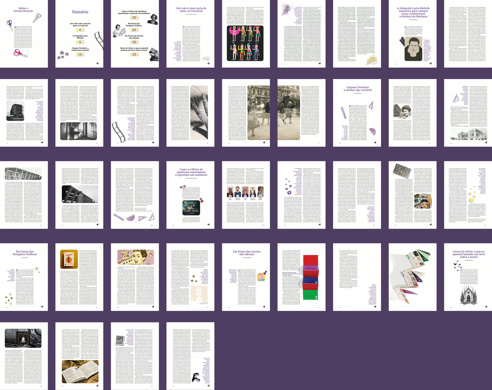

Recorte
Neste projeto, a proposta consistiu em selecionar conteúdos da Revista Recorte e diagramá-los no modelo de livreto físico, para isso, foi-se executada uma pesquisa aprofundada de textos juntamente com o desenvolvimento de uma identidade visual com coesão entre o conteúdo textual e suas imagens, legibilidade e organização tipográfica. O livreto obteve como base o olhar feminino sobre o design e a arte. Todos os textos são apresentados sob essa ótica, e a identidade visual reforça e complementa o conteúdo, promovendo uma experiência visual e conceitual integrada.
DisciplinaFundamentos Gráficos
Ano2024-2



o olhar feminino sobre o design e a arte, todos os textos foram escritos por mulheres que contam sobre, ou sua experiência na área das artes ou de outras mulheres.

pág 1 – 44